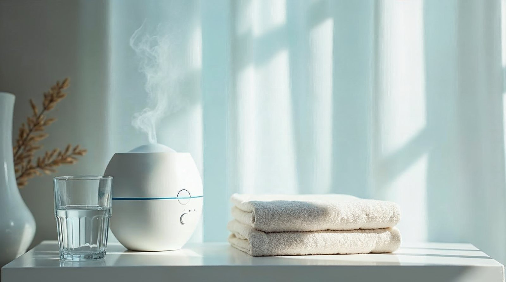
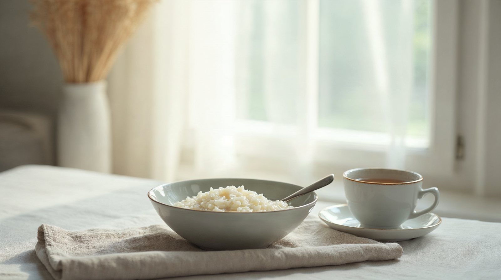

이종호 한의사 감수좋은꿈참사랑한의원 대표원장 (한의사 면허번호 19769)발행 2026-11-26 · 수정 2026-11-26
이 글의 차례
아침에 침을 삼키는데 목 안쪽이 칼로 긁는 듯 따갑습니다. 거울을 보니 목젖 양옆이 빨갛게 부어 있고, 오후가 되자 열이 오르며 온몸이 쑤십니다. '또 시작이구나' 하는 생각이 먼저 듭니다. 지난번 편도염이 나은 지 두 달도 안 되었는데, 이번에도 일주일은 꼼짝없이 앓겠다는 생각에 한숨부터 나옵니다.
편도는 목구멍 양옆에 자리한 림프 조직으로, 입과 코로 들어오는 세균과 바이러스를 가장 먼저 만나는 문지기 역할을 합니다. 이 편도에 염증이 생겨 붓고 아프며 열이 나는 것을 편도염이라고 합니다. 아이와 젊은 성인에게 특히 흔하고, 어떤 분은 해마다 여러 번 반복해서 겪습니다.
진료실에서 "피곤하면 꼭 편도부터 부어요"라는 말을 자주 듣습니다. 편도가 그분의 몸에서 가장 먼저 신호를 보내는 곳이 된 셈입니다. 이 글에서는 편도염이 왜 반복되는지, 무엇을 먼저 확인하는지, 일상에서 해 볼 수 있는 것과 한의원에서 함께 살피는 것을 차근차근 적어 보겠습니다.
왜 편도염이 반복될까요
편도염은 감기 바이러스로 생기는 경우가 가장 많고, 일부는 연쇄상구균 같은 세균으로 생깁니다. 바이러스성은 콧물이나 기침과 함께 오는 경우가 많고, 세균성은 갑작스러운 고열과 심한 목 통증, 편도에 하얀 고름이 끼는 모습으로 오는 경우가 많습니다. 둘의 구분과 항생제 필요 여부는 진찰과 검사로 정합니다.
반복되는 이유는 사람마다 다릅니다. 편도의 주름 사이에 균이 머물기 쉬운 구조를 가진 분이 있고, 코가 자주 막혀 입으로 숨을 쉬면서 목이 마르고 염증이 잘 생기는 분도 있습니다. 어린이집이나 학교처럼 사람이 많은 곳에서 지내는 아이는 자주 옮기도 합니다.
피로와 수면 부족, 과음, 흡연, 건조한 실내 공기처럼 목의 방어를 약하게 만드는 생활도 함께 영향을 줍니다. 시험이나 마감, 야근이 몰릴 때마다 편도가 부어오른다는 분이 많은 이유입니다.
한의학에서는 목이 붓고 아프며 열이 나는 모습을 유아(乳蛾)라 부르며 살펴 왔습니다. 급하게 붓고 열이 높은 때와, 자주 반복되며 목이 늘 칼칼하고 쉽게 지치는 때를 나누어 보는데, 뒤쪽은 몸의 진액이 마르거나 기운이 약해진 바탕을 함께 살핍니다. 다만 이것은 급성 염증의 진찰과 치료를 대신하는 틀이 아닙니다.
감기 목, 편도염, 다른 목 통증, 이렇게 나눠 봅니다
목이 아프다고 다 편도염은 아닙니다. 정확한 판단은 이비인후과나 내과, 소아청소년과 진료를 따르시고, 여기서는 이해를 돕는 정도로만 나눠 보겠습니다.
감기와 함께 오는 목 통증
콧물, 재채기, 기침이 함께 있고 목은 따끔한 정도이며, 열이 높지 않거나 하루 이틀 미열로 지나가는 경우가 많습니다. 대개 며칠 사이에 저절로 가라앉습니다.
편도염에서 자주 보이는 모습
침을 삼킬 때 목 안쪽이 심하게 아프고, 열이 높게 오르며, 몸살이 함께 옵니다. 거울로 보면 편도가 빨갛게 붓고 하얀 점이나 막이 보이기도 합니다. 턱 아래 목의 림프샘이 붓고 누르면 아프기도 합니다.
다른 원인도 생각해 보는 모습
몇 주씩 이어지는 심한 피로와 함께 목이 아프고 림프샘이 크게 부었다면 다른 바이러스 감염을 확인해 보는 경우가 있습니다. 열은 없는데 목에 뭔가 걸린 느낌만 오래간다면 만성 인후염이나 역류, 긴장과 관련된 경우도 있습니다.

얼마나 자주 반복되면 더 살펴보나요
편도염을 한 해에 한두 번 겪는 것은 드물지 않습니다. 다만 한 해에 여러 번, 혹은 몇 해에 걸쳐 꾸준히 반복된다면 이비인후과에서 편도 상태를 살펴보고 앞으로의 방향을 상의해 보시길 권합니다. 횟수와 증상의 정도를 기록해 두면 이 상의가 훨씬 수월해집니다.
편도가 커서 코를 심하게 골거나 자다가 숨을 멈추는 듯한 아이, 편도 주변에 고름이 생긴 적이 있는 분은 수술을 포함한 치료를 이야기하기도 합니다. 수술 여부와 시기는 이비인후과에서 정하고, 한의원에서는 그 결정을 존중하며 몸의 회복을 함께 살핍니다.
편도에 하얀 알갱이 같은 것이 끼어 냄새가 나는 편도결석으로 고민하는 분도 있습니다. 편도염과는 다르지만 편도의 구조와 관련이 있어 함께 여쭙는 경우가 많습니다.
아이의 편도염은 이렇게 살핍니다
아이는 목이 아프다는 말을 정확히 하지 못하는 경우가 많습니다. 갑자기 밥을 안 먹으려 하거나, 침을 흘리거나, 물만 찾고, 짜증이 늘고 열이 오른다면 목 안쪽을 살펴봐 달라고 진료 때 말씀해 주세요. 귀가 아프다고 하는 아이도 있습니다.
어린아이의 편도와 아데노이드는 원래 어른보다 큰 편이고, 자라면서 차츰 작아지는 경우가 많습니다. 그래서 편도가 크다는 말만으로 바로 수술을 정하기보다 반복 횟수, 코골이와 잠의 질, 성장과 식사를 함께 보며 이비인후과와 상의합니다.
편도염을 앓고 나면 아이는 며칠씩 입맛을 잃고 기운이 처지기 쉽습니다. 이때 억지로 많이 먹이기보다 부드럽고 따뜻한 음식을 조금씩 자주 주시고, 바깥 활동은 기운이 돌아오는 것을 보며 천천히 늘려 주세요.
어른의 편도염은 생활의 신호일 때가 많습니다
어른이 되어서도 편도염이 잦다면, 그 시기의 생활을 함께 돌아보게 됩니다. 야근과 회식이 몰린 주, 잠을 줄여 가며 마감을 넘긴 주, 담배를 다시 피우기 시작한 달처럼 편도가 붓기 전의 흐름이 비슷한 분이 많습니다. 기록을 보며 그 고리를 같이 찾아보면, 다음 고비를 미리 알아차리는 데 도움이 됩니다.
스스로 점검해 보세요
아래 가운데 해당하는 줄이 있다면 표시해 두셨다가 진료 때 함께 보여 주세요. 점수를 매기려는 목록은 아닙니다.
- 지난 1년 동안 목이 붓고 열이 나서 병원에 간 횟수가 여러 번이다
- 피곤하거나 잠을 못 잔 뒤에 편도가 먼저 붓는다
- 코가 자주 막혀 입으로 숨을 쉬고, 아침에 목이 바짝 말라 있다
- 자면서 코를 골거나, 아이가 입을 벌리고 잔다
- 편도에 하얀 알갱이가 끼거나 입 냄새가 신경 쓰인다
- 실내가 건조하고 물을 잘 마시지 않는 편이다
- 술을 자주 마시거나 담배를 피운다
- 편도염이 나은 뒤에도 기운이 오래 돌아오지 않는다
먼저 이렇게 여쭙니다
진료 기록과 이야기를 들으며 저는 대략 이런 순서로 여쭙습니다. 처음부터 다 기억하지 못하셔도 괜찮습니다.
- 지금 열과 목 통증은 어떤가요? 침이나 물은 삼킬 수 있나요?
- 이번에 진료를 받으셨나요? 항생제나 해열제를 처방받으셨나요?
- 지난 1~2년 동안 몇 번이나 반복되었나요? 매번 비슷한 계기가 있었나요?
- 이비인후과에서 편도 크기나 수술 이야기를 들은 적이 있나요?
- 코막힘, 비염, 코골이, 입으로 숨쉬기는 어떤가요?
- 잠은 몇 시간 주무시나요? 요즘 피로가 많이 쌓였나요?
- 물은 하루에 얼마나 드시나요? 술과 담배는 어떤가요?
- 드시는 약과 영양제가 있나요?
아이라면 어린이집이나 학교에서 같은 시기에 아픈 친구가 많았는지, 편도염 뒤에 입맛과 기운이 얼마나 걸려 돌아왔는지도 여쭙습니다.
일상에서 먼저 해 볼 수 있는 것
생활을 바꾼다고 편도염이 다시 안 생긴다고 말씀드릴 수는 없습니다. 다만 목의 방어를 약하게 만드는 고리를 줄이고, 앓고 난 뒤 회복을 돕는 일은 해 볼 수 있습니다. 아래에서 하나만 골라 시작해 보세요.
- 미지근한 물을 하루 여러 번 조금씩 나눠 마시기
- 겨울철 실내 습도를 적당히 유지하고, 자는 방에 젖은 수건을 걸어 두기
- 코가 막히면 생리식염수로 코를 헹구고, 입으로 숨 쉬는 시간을 줄이기
- 외출 뒤와 식사 전에 손 씻기, 양치 뒤 가볍게 가글하기
- 마감이나 시험 기간에도 잠을 최소한 지키고, 몸이 으슬으슬하면 일찍 눕기
- 목이 칼칼한 날에는 술과 담배, 맵고 뜨거운 음식을 피하기
편도염을 앓는 동안에는 미지근한 죽이나 수프처럼 삼키기 편한 음식으로 끼니를 이어 가고, 물을 자주 드세요. 처방받은 항생제가 있다면 증상이 가라앉아도 정해진 기간 동안 끝까지 드시는 것이 중요합니다.
앓고 난 뒤 일주일은 회복 기간으로 생각해 주세요. 열이 내리자마자 밀린 일을 몰아서 하면 몸이 덜 회복된 상태로 다시 지치기 쉽습니다. 잠을 조금 더 자고, 일정을 조금 덜어 내는 것만으로도 다음 편도염까지의 간격이 달라지는 분이 많습니다.
가족 가운데 편도염을 자주 앓는 사람이 있다면 컵과 수건을 따로 쓰고, 앓는 동안에는 식사 때 반찬을 덜어 먹는 것도 서로 옮기는 일을 줄이는 데 도움이 됩니다. 칫솔은 앓고 난 뒤 새것으로 바꾸는 분도 많습니다.
목을 많이 쓰는 일을 하신다면 앓는 동안과 회복기에는 말하는 시간을 줄이고, 마이크를 쓰거나 중간중간 물을 마시며 목을 쉬게 해 주세요. 목소리를 쥐어짜면 회복이 더 늦어지기 쉽습니다.
한의원에서 함께 살필 수 있는 경우
- 편도염이 자주 반복되어 이비인후과 진료를 받으면서 몸의 회복을 함께 상의하고 싶은 경우
- 편도염이 나은 뒤에도 기운이 돌아오지 않고 입맛이 없으며 쉽게 지치는 경우
- 목이 늘 마르고 칼칼하며 피곤하면 편도부터 붓는 흐름이 반복되는 경우
- 코막힘과 입으로 숨쉬기, 코골이가 함께 있어 목이 늘 건조한 경우
좋은꿈참사랑한의원에 처음 오시면 지금 열과 통증이 얼마나 심한지, 이비인후과나 내과, 소아청소년과 진료를 받으셨는지부터 확인합니다. 그다음 맥을 짚으며 피로, 잠, 땀, 식욕, 대변, 입 마름, 코 상태를 여쭙고, 필요하면 목 안쪽과 혀를 살펴봅니다.
이렇게 모은 이야기를 바탕으로 침, 한약 상담, 생활 관리 가운데 지금 몸에 맞는 방법을 함께 정합니다. 급하게 열이 오르고 아플 때는 먼저 진료를 받아 염증 치료를 받으시고, 한의원에서는 그 치료를 존중하며 회복기와 반복의 바탕을 살피는 쪽에 무게를 둡니다. 한약을 상의할 때는 드시는 약을 모두 확인하며 신중하게 정합니다.
한의원 진료가 이비인후과 진료를 대신하지는 않습니다. 편도 상태와 수술 여부는 이비인후과에서 상의하시고, 그 사이의 몸 상태와 생활은 함께 살피겠습니다.
이렇게 기록해 오시면 상담이 쉬워집니다
편도염은 앓을 때는 힘들지만 나으면 금방 잊힙니다. 앞으로 생길 때마다 아래처럼 적어 보세요.
- 목이 붓기 시작한 날과 가장 심했던 날, 가장 높았던 체온
- 진료를 받은 곳과 날짜, 항생제를 처방받았는지
- 편도에 하얀 고름이 보였는지, 턱 아래가 부었는지
- 앓기 전 일주일의 잠, 피로, 술자리, 큰 일정
- 열이 내린 뒤 기운이 돌아오기까지 걸린 날짜
- 한 해 동안의 편도염 횟수
아이라면 어린이집이나 학교를 쉰 날짜도 함께 적어 두세요. 이 기록은 이비인후과에서 수술 여부를 상의할 때도 그대로 쓰입니다.
목이 부었을 때 휴대폰으로 목 안쪽 사진을 한 장 찍어 두는 것도 좋습니다. 진료실에 오실 때는 이미 가라앉은 뒤인 경우가 많아서, 가장 심했던 때의 모습을 보여 주시면 설명이 훨씬 쉬워집니다.

치료를 이어 가며 지내기
처방받은 항생제나 다른 약이 있다면 처방한 의사와 상의 없이 줄이거나 끊지 않습니다. 한의원 진료를 함께 받으실 때도 그 약은 그대로 두시고, 드시는 약을 모두 알려 주세요.
편도염이 반복되면 일과 학업이 자꾸 끊겨 마음까지 지칩니다. 한 번에 고리를 끊으려 하기보다, 잠과 물, 코, 회복기를 하나씩 챙기며 간격을 조금씩 넓혀 가는 쪽으로 함께 가 보겠습니다. 다음에 오시면 그사이 목이 어땠는지부터 여쭙겠습니다.
이런 증상은 먼저 확인이 필요합니다
- 한쪽 목이 심하게 부어 침도 삼키기 어렵고 입이 잘 벌어지지 않거나 목소리가 웅얼거리는 경우
- 숨쉬기가 힘들거나 침을 삼키지 못해 흘리는 경우
이런 신호가 있으면 한의원보다 가까운 병원이나 응급실을 먼저 찾으세요.
함께 읽으면 좋은 글
- 목이 늘 칼칼하고 뭔가 걸린 듯한 만성 인후염·매핵기는 어떻게 살피나요?
- 아이가 감기에 자주 걸리고 코가 막힐 때는 어떤 점을 살펴보나요?
- 아이가 자면서 코를 골고 입으로 숨 쉴 때는 어떻게 살피나요?
- 자고 일어나면 입이 바짝 마르고 목이 칼칼할 때는 어떻게 살피나요?
여쭙는 것
- 지금 열과 목 통증은 어떤가요? 침이나 물은 삼킬 수 있나요?
- 이번에 진료를 받으셨나요? 항생제나 해열제를 처방받으셨나요?
- 지난 1~2년 동안 몇 번이나 반복되었나요? 매번 비슷한 계기가 있었나요?
생활에서 해 볼 것
- 미지근한 물을 하루 여러 번 조금씩 나눠 마시기
- 겨울철 실내 습도를 적당히 유지하고, 자는 방에 젖은 수건을 걸어 두기
- 코가 막히면 생리식염수로 코를 헹구고, 입으로 숨 쉬는 시간을 줄이기
한의원에서 함께 살필 것
- 편도염이 자주 반복되어 이비인후과 진료를 받으면서 몸의 회복을 함께 상의하고 싶은 경우
- 편도염이 나은 뒤에도 기운이 돌아오지 않고 입맛이 없으며 쉽게 지치는 경우
- 목이 늘 마르고 칼칼하며 피곤하면 편도부터 붓는 흐름이 반복되는 경우
먼저 확인이 필요한 신호
- 한쪽 목이 심하게 부어 침도 삼키기 어렵고 입이 잘 벌어지지 않거나 목소리가 웅얼거…
- 숨쉬기가 힘들거나 침을 삼키지 못해 흘리는 경우
한눈에 보는 표
| 구분 | 핵심 |
|---|---|
| 여쭙는 것 | 지금 열과 목 통증은 어떤가요? 침이나 물은 삼킬 수 있나요? 이번에 진료를 받으셨나요? 항생제나 해열제를 처방받으셨나요? |
| 생활에서 해 볼 것 | 미지근한 물을 하루 여러 번 조금씩 나눠 마시기 겨울철 실내 습도를 적당히 유지하고, 자는 방에 젖은 수건을 걸어 두기 |
| 한의원에서 함께 살필 것 | 편도염이 자주 반복되어 이비인후과 진료를 받으면서 몸의 회복을 함께 상의하고 싶은 경우 편도염이 나은 뒤에도 기운이 돌아오지 않고 입맛이 없으며 쉽게 지치는 경우 |
| 먼저 확인이 필요한 신호 | 한쪽 목이 심하게 부어 침도 삼키기 어렵고 입이 잘 벌어지지 않거나 목소리가 웅얼거리는 경우 숨쉬기가 힘들거나 침을 삼키지 못해 흘리는 경우 |
자주 묻는 질문
한의원에 다니면 편도염이 다시 안 생기나요?
다시 생기지 않는다고 약속드릴 수는 없습니다. 편도 상태와 감염 치료는 이비인후과나 내과 진료를 따르시고, 한의원에서는 회복기의 기력, 잠, 목의 건조함, 코 상태처럼 반복에 영향을 주는 부분을 함께 살피며 침과 한약 상담, 생활 관리를 상의합니다.
편도염으로 열이 날 때 한의원에 와도 되나요?
열이 높고 목이 심하게 아프다면 먼저 이비인후과나 내과, 소아청소년과 진료를 받아 염증 치료를 받으시길 권합니다. 한의원에서는 그 치료를 존중하며 회복기와 반복의 바탕을 함께 살핍니다.
편도 수술을 권유받았는데 어떻게 해야 할까요?
수술 여부와 시기는 이비인후과에서 편도 상태와 반복 횟수를 보고 정합니다. 궁금한 점은 담당 선생님께 충분히 여쭤 보시고, 한의원에서는 그 결정을 존중하며 수술 전후의 몸 상태를 함께 살필 수 있습니다.
항생제를 자주 먹어도 괜찮을까요?
항생제 처방은 진찰과 검사로 필요성을 판단해 정하는 것이니 처방한 의사와 상의하세요. 처방받았다면 증상이 가라앉아도 정해진 기간 동안 끝까지 드시는 것이 중요합니다.
좋은꿈참사랑한의원은 재진 때 지난번 이야기부터 이어서 여쭙니다. 진료시간과 예약은 오시는 길에서 확인하세요.
어디서 상담받을 수 있나요?
좋은꿈참사랑한의원은 서울 동작구 만양로2길 2 신성빌딩 3층·5층(서울 동작구 상도동, 7호선 상도역 3번 출구 근처)에 있습니다. 한의사 3명(이종호 대표원장, 조영기 수석진료원장, 정원영 진료원장)이 진료합니다. 진료시간은 평일 09:30~20:00(점심 13:00~14:00), 토·일·공휴일 09:30~15:00이며, 방문 전 전화로 확인을 권합니다. 예약은 네이버 예약, 카카오톡 상담, 전화 02-815-7510로 받습니다.
이 글은 일반적인 건강 정보이며 개인의 진단이나 치료를 대신하지 않습니다. 증상이 있거나 복용 중인 약이 있다면 진료를 통해 확인하세요. 치료 효과는 개인마다 다를 수 있습니다.
작성 기준: 일반적으로 알려져 있는 건강 정보를 참고해 정리했습니다(대표원장 감수). 증상 기록은 1~2주 동안 하루 1회, 비슷한 시간에 적어 오시면 지난 상태와 비교하기 쉽습니다.